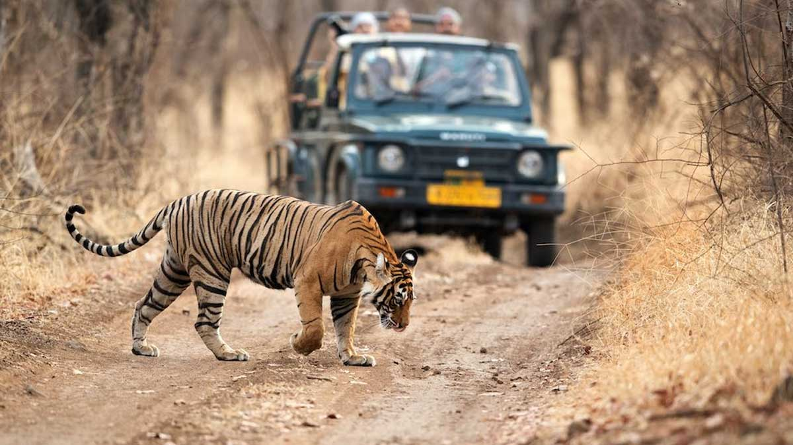
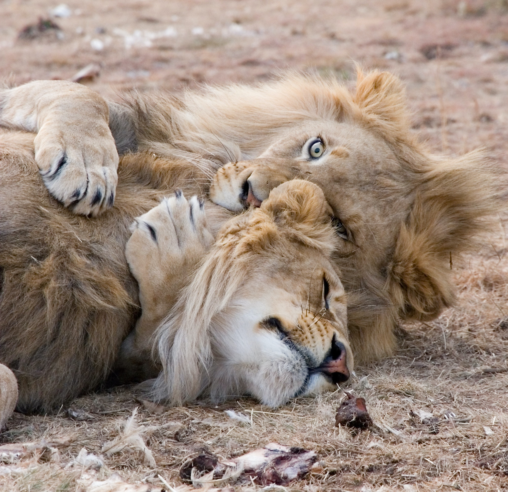
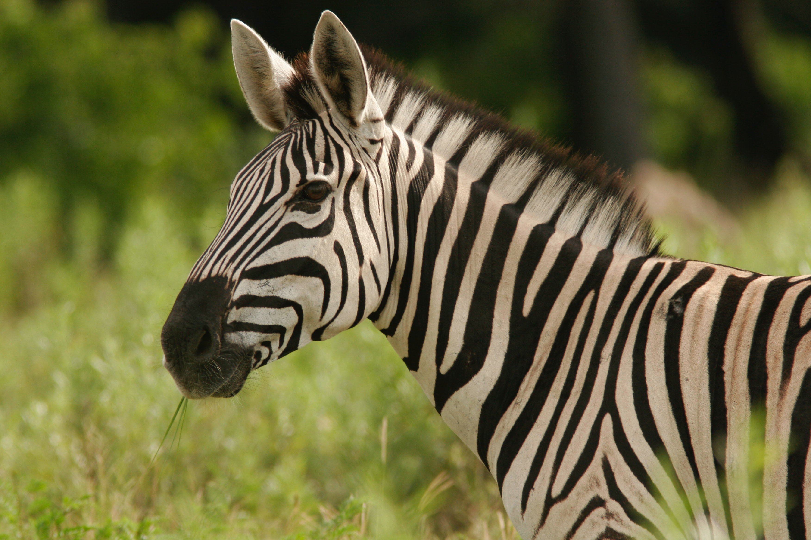

Wildlife Sanctuary

Tigeris the largest living cat species and a member of the genus Panthera. It is most recognisable for its dark vertical stripes on orange fur with a white underside. An apex predator, it primarily preys on ungulates, such as deer and wild boar. It is territorial and generally a solitary but social predator.

Elephants are the largest existing land animals. Three living species are currently recognised: the African bush elephant, the African forest elephant, and the Asian elephant. They are the only surviving members of the family Elephantidae and the order Proboscidea. The order was formerly much more diverse in it

Deer or true deer are hoofed ruminant mammals forming the family Cervidae. The two main groups of deer are the Cervinae, including the muntjac, the elk (wapiti), the red deer, and the fallow deer; and the Capreolinae, including the reindeer (caribou), white-tailed deer, the roe deer.

Lion is a large cat of the genus Panthera native to Africa and India. It has a muscular, broad-chested body, short, rounded head, round ears, and a hairy tuft at the end of its tail. It is sexually dimorphic; adult male lions are larger than females and have a prominent mane. It is a social species, forming groups called prides.

zebra are primarily grazers and can subsist on lower-quality vegetation. They are preyed on mainly by lions and typically flee when threatened but also bite and kick. Zebra species differ in social behaviour, with plains and mountain zebra living in stable harems consisting of an adult male or stallion.